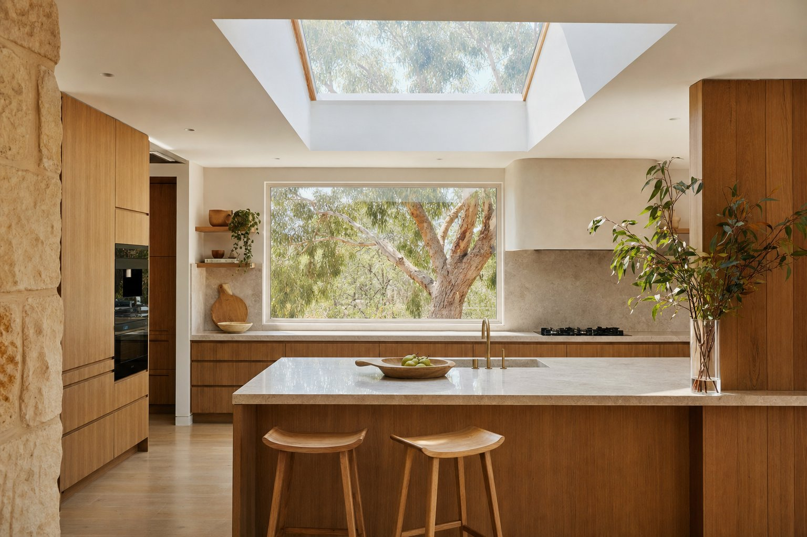
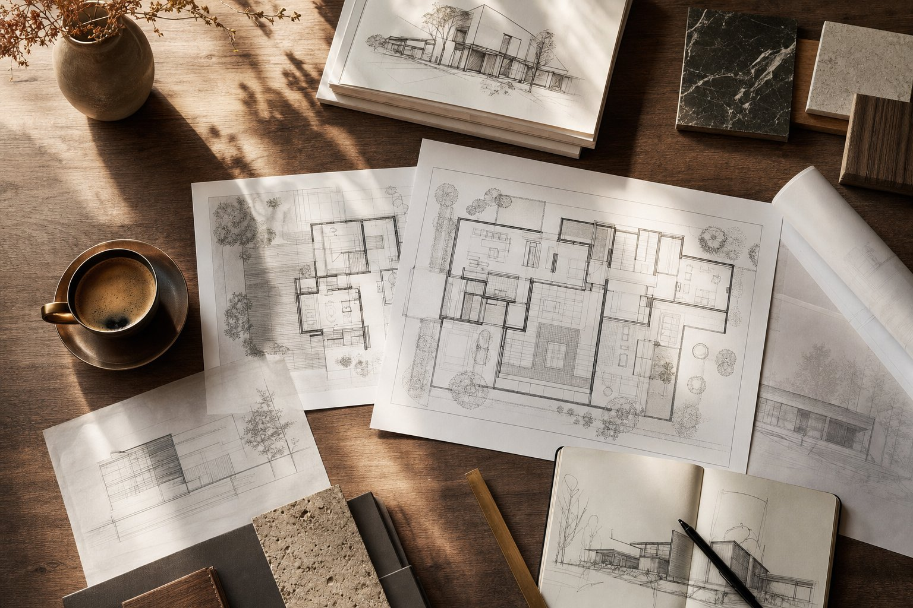
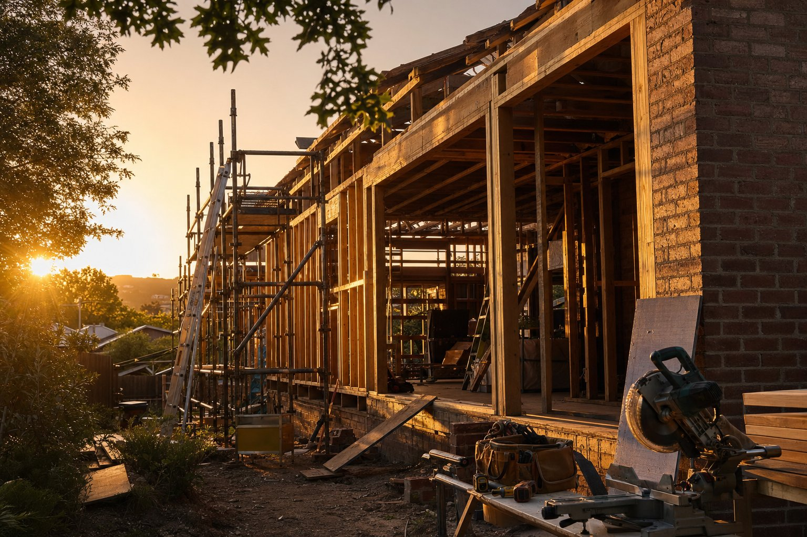

This is the guide I wish every Canberra homeowner had before they started a renovation. Real costs, real timelines, real decisions, written by a licensed ACT builder with 19 years on the tools and 5 years running my own business.
I'm Jeff Rentoule. I run Rentoule Projects, a small premium residential building business based in Canberra. Over the past five years I've watched too many homeowners walk into renovations carrying assumptions that cost them money, time, or both. This guide is my attempt to fix that. No corporate fluff, no sales pitch in disguise. Just what I would tell a mate over coffee if they were thinking about renovating.
Use it however you want. Read it end to end, jump to the section you need, or come back when a specific question comes up.
1. The real cost of renovating in Canberra
Let's start with the question everyone wants answered first. What does a renovation actually cost in Canberra in 2026?
The honest answer is "it depends." But that's a cop-out, so here are the ranges I see across our projects, broken out by the most common project types. These are turn-key, fixed-price figures including labour, materials, project management, and trade coordination.
| Project type | Typical Canberra range | What you get |
|---|---|---|
| Bathroom renovation | $25,000 to $60,000 | Standard 6-9 sqm bathroom, full strip-out and rebuild, mid-range to premium fixtures |
| Kitchen renovation | $35,000 to $90,000+ | Complete redesign, custom cabinetry, stone benchtops, quality appliances |
| Whole-house cosmetic refresh | $80,000 to $200,000 | Paint, flooring, kitchen, bathrooms, light fittings. No structural work |
| Major renovation (structural) | $300,000 to $800,000+ | Walls moved, layout changed, new kitchen and bathrooms, possibly second storey |
| Single-storey extension | $140,000 to $400,000 | 30-60 sqm addition, usually living space or master suite, premium finishes |
| Second storey addition | $300,000 to $700,000+ | Full upper floor, structural reinforcement, internal stairs, often 2-3 bedrooms |
| Knockdown rebuild | $700,000 to $2M+ | Demolition, new build to your specification, typically 200-350 sqm |
For deeper detail on each, I've written separate cost guides:
- Home renovation costs in Canberra (the cornerstone cost guide)
- Bathroom renovation costs
- Kitchen renovation costs
- Home extension costs
Why Canberra costs more than the eastern seaboard average
Three reasons. First, the trade pool is smaller. Sydney and Melbourne have an order of magnitude more builders, plumbers, electricians and tilers competing for work. We don't. When demand peaks, prices peak harder here.
Second, ACT regulations are stricter than most states. Energy efficiency requirements (EER), bushfire compliance in many suburbs, asbestos protocols on older homes, and the ACT's particular planning rules all add cost. They also add quality, but they add cost.
Third, our climate is brutal. Canberra winters demand higher-spec insulation, double or triple glazing, sealed building envelopes, and reverse-cycle systems sized for sub-zero overnights. A renovation that ignores climate performance is a renovation you'll regret in July.

2. How to plan your renovation properly
The biggest predictor of how a renovation goes is how much thought went in before a single trade arrived on site. Most disasters I've seen started with rushed planning.
Here's the sequence that works.
Step 1: Define the brief in writing
Before you talk to anyone, write down what you want. Not "a bigger kitchen" - write down "I want an open-plan kitchen, dining and living area where the kids can do homework while I cook, with a butler's pantry hidden from view, and a north-facing dining nook with morning sun." The more specific you are, the easier every conversation downstream becomes.
If you can't write your brief, you're not ready to start. That's not a failing - it just means the next step is conversations, not contracts.
Step 2: Set a budget you can defend
Most people set a budget by guessing what they can afford and then assuming a renovation will fit. That's backwards. Start with the cost ranges in section 1, work out what your project realistically costs, then check whether your finance and savings cover it with a 15% buffer for variations and surprises.
If the numbers don't work, you have three options: reduce scope, find more money, or wait. Pretending the numbers work is the most expensive option, because it leads to either a half-finished project or compromises that ruin the result.
Step 3: Get the right professionals involved early
For anything beyond a simple cosmetic refresh, you need three people in the room: a designer or architect, a builder, and a structural engineer if walls are coming out. Get all three involved before drawings are finalised. I've watched homeowners spend $15,000 on architectural plans only to discover the design isn't buildable within their budget.
Some builders, including us, will do early-stage feasibility before you commit to detailed design. It saves money and frustration on both sides.
Step 4: Understand the approval pathway
Not every renovation needs a Development Application (DA), but you need to know which category yours falls into before you commit. Cosmetic and minor work often qualifies as exempt development. Structural work, extensions, second storeys and anything that changes building footprint usually needs DA approval. The rules in the ACT are specific. I've written a full guide on DA approvals here.
Step 5: Lock the scope before you sign
Every variation after a contract is signed costs more than it would have during planning. Sometimes a lot more. Spend the time up front to nail down inclusions, finishes, fixtures and fittings to the level of model numbers and brand names. The contract should have a defined scope, a fixed price, a payment schedule, a completion date with liquidated damages, and a written variations process.

If you want to go deeper, my step-by-step planning guide walks through the full process.
Have a project in mind?
Coffee's on me. Let's chat about what you're dreaming up and see if we're a good fit.
Request a Consult3. Avoiding budget blowouts
The single biggest reason renovations go over budget is that the original budget didn't include things it should have. The work itself usually costs roughly what we quoted. The blowout comes from the line items nobody mentioned.
Here are the costs I see catch homeowners out most often.
Site costs that aren't site costs
Skip bins, scaffolding, temporary fencing, hoardings, dust barriers, port-a-loo on site, electrical and water connections during the build. On a major renovation these add up to between $5,000 and $15,000. They should be in the contract. Ask.
Demolition surprises
Older Canberra homes, particularly anything pre-1985, can hide asbestos in eaves, cornices, vinyl flooring, fibro sheeting and more. ACT asbestos removal requires a licensed contractor and can add $5,000 to $25,000 if it's discovered during demolition. The Mr Fluffy era is its own beast - if you suspect Mr Fluffy contamination, that's a separate conversation entirely. I've written about Mr Fluffy block rebuilds here.
Structural surprises
Once walls come down, what's behind them sometimes isn't what the plans assumed. Rotted bearers, undersized beams, slumped slabs, poor existing footings. A well-experienced builder will price a contingency for this on older homes, but the surprises still happen. Budget 10-15% contingency on top of your contract price for any structural renovation.
Council and certifier fees
DA fees, building certifier inspections, surveyor fees, energy efficiency reports, traffic management plans for some streetscapes. These are usually $3,000 to $10,000 across a full project. Sometimes they're in the builder's contract, sometimes they're owner-supplied. Check.
Connections and services
Electrical upgrades from single to three-phase, water meter upgrades, NBN rerouting, stormwater detention. Most homeowners assume the existing services are fine. Often they aren't. Allow $5,000 to $20,000 for service upgrades on bigger projects.
Worth flagging on gas specifically: the ACT is phasing gas out of the residential network, so new gas connections aren't happening and gas appliance replacements are increasingly restricted. If your existing home has gas and you're relocating services during a renovation, plan for the cost of either relocating the existing line or switching to all-electric. Going all-electric from the outset is usually the cleaner call, and the induction cooktop/heat-pump hot water/reverse-cycle stack is now genuinely excellent.
Moving out costs
If you can't live in the home during the build, you need to budget for rental accommodation, removalists, double rates and bills. A six month rental in Canberra inner-north is $25,000 to $35,000. Storage of furniture is another $1,500 to $3,500. Often these are bigger than people expect.
Furniture, blinds, landscaping and finishing
The contract gets you to handover. It doesn't get you to "the home is ready to live in." Window furnishings, new furniture, landscaping, fencing, driveways, replanting and reinstating front gardens after construction traffic - all of these are extra. On a major renovation, plan another $30,000 to $80,000 for completing the home after handover.
For the full breakdown of what catches people out, my 12 hidden renovation costs in Canberra article goes deeper.

4. Setting realistic timelines
The other place expectations get crushed is timelines. Renovations take longer than people think, every single time. Here's what I see in practice.
| Project type | Realistic on-site duration | Total elapsed time including planning & approvals |
|---|---|---|
| Bathroom renovation | 4-7 weeks | 3-5 months |
| Kitchen renovation | 6-10 weeks | 4-7 months |
| Whole-house cosmetic refresh | 10-16 weeks | 5-9 months |
| Major structural renovation | 6-10 months | 12-20 months |
| Single-storey extension | 5-8 months | 11-17 months |
| Second storey addition | 7-11 months | 14-24 months |
| Knockdown rebuild | 12-16 months | 20-30 months |
Why "elapsed time" matters more than "build time"
Most homeowners hear "the build will take six months" and start planning their lives around that number. But before the build starts there's a designer phase (1-3 months), a documentation phase (1-2 months), a DA approval window (8-16 weeks for anything that needs one), a tendering and contract phase (3-6 weeks), and a builder lead time (1-3 months for a quality builder with a backlog). All of that happens before the first sledgehammer swings.
If you're starting conversations with a builder today, a major renovation realistically isn't completed inside 14 months. Plan accordingly. Builders who promise dramatically shorter timelines are usually about to disappoint you.
Things that compress timelines
- Decisions made early and not changed
- A clear, locked scope with no open variables
- Selections (tiles, fixtures, paint colours, hardware) finalised before the build starts
- Working with a builder who has reliable trade relationships
- Living off-site so trades can work flat out
Things that extend timelines
- Mid-build variations and changes of mind
- Late selections (this is the single biggest cause of delays I see)
- Custom-made items with long lead times (joinery, stone benchtops, imported tiles)
- Living on-site through the build
- DA conditions that require additional work
- Weather delays in winter, particularly for slab and roof stages
5. Choosing the right builder
If you only get one decision right in the whole process, make it this one. The right builder turns a stressful project into a great one. The wrong builder turns a great project into a disaster.
Here's what to look for. I've written a full 10-question guide on builder selection, but the short version is below.
Licence and insurance
In the ACT, residential builders need to be licensed by Access Canberra. The licence number should be on every quote and contract. Insurance should include public liability, contract works, and home warranty insurance for jobs over $12,000. If a builder can't show you these documents, walk away.
Fixed price, not cost-plus
Cost-plus contracts (where you pay all costs plus the builder's margin) sound flexible. They're not. They transfer all the price risk to you. A reputable builder will quote a fixed price and stand behind it. Variations are negotiated transparently when scope changes, but the base contract is locked.
Every contract I sign at Rentoule Projects is fixed-price. It's harder for me, because I have to estimate accurately and absorb my own mistakes. That's the point. It means you know exactly where you stand.
References from completed work
Anyone can show you finished photos. Ask for the contact details of two clients whose projects have been finished for at least 12 months. Ring them. Ask: did the project finish on time, did it finish on budget, did the builder fix things that came up after handover, and would you use them again? Three minutes on the phone tells you more than three days of marketing.
Site presence
Ask who will be on site daily. At Rentoule Projects, we have a site manager (Matt) who is on every active build every day. I'm across every project but I'm not standing on site - I'm running the business, talking with new clients, handling design and contract decisions. Some builders never come on site at all. Some operate as foremen running the actual labour. Both can work, but you need to know which model you're hiring.
Communication standards
How will you hear about progress? How quickly do they respond to questions? How are decisions documented? A great builder has a system. A poor builder makes you chase them. If you're already chasing them during the quoting stage, that's the relationship you'll have for nine months.
Want to chat about your project?
I'm always up for a no-pressure conversation. Bring your ideas, your floor plan, or just an empty notepad. We'll figure out if we're a fit together.
Request a Consult6. Designing for the next 20 years
The renovations that age well in Canberra share a few traits. The ones that look dated in five years also share a few traits.
Orientation and natural light
This is the single biggest design lever in Canberra. North-facing living spaces, properly designed for our seasonal sun angles, are warm in winter without heating and cool in summer with the right eaves. Get this right and your home performs better, costs less to run, and feels better to live in. Get this wrong and you're fighting your house with energy bills for the next two decades.
If your existing home faces the wrong way, a renovation is your chance to redesign around the sun. Sometimes that means moving the kitchen and living areas. It's worth it.
Energy performance
The ACT now requires 7-star EER on most new builds and major renovations. The honest truth is that 8-star and 9-star designs aren't much more expensive at construction, and they save thousands per year over the life of the home. Insulate above the minimum, double-glaze (or triple-glaze for north-facing glass), seal the building envelope properly, install efficient reverse-cycle heating and cooling. My EER guide goes deeper on this.
Layout that flexes
The home you need at 35 with two kids isn't the home you need at 50 with teenagers, or 65 with grown-up children visiting. Good design accommodates change. Spaces that can shift function (a study that becomes a guest room, an open plan that can be partitioned, a downstairs bedroom that becomes a bedroom for ageing parents). Avoid hyper-specific spaces that lock the home into one phase of life.
Materials that age
The fashionable choice today is the dated choice in five years. The classics rarely date. Timber, stone, brick, plaster, neutral palettes, durable hardware. Save the trend-driven choices for elements you can change cheaply (cushions, art, paint colour). Build the bones from materials that look better with time.
Indoor-outdoor connection
Canberra has a beautiful climate for outdoor living three seasons a year. Bifold or stacker doors that open the living space to a covered alfresco, properly sized for a dining table, oriented to catch afternoon sun, with shelter from the wind. This single design move adds more lifestyle value per dollar than almost anything else we build.
7. Planning approvals and ACT regulations
The ACT's planning system is its own creature. Here's the broad shape, but my DA approval article has the full detail.
Three categories of planning approval
- Exempt development: Most cosmetic work, internal renovations not affecting structure, small repairs. No approval required, but compliance with building codes still applies.
- Single Dwelling Housing Development Code (SDHDC) track: For most single-dwelling houses, extensions, alterations and additions, if your project meets the rules in this code you can proceed without a full Development Application. This is the pathway we try to use wherever possible. It's quicker, cheaper and has far less uncertainty than the merit-track DA. Most of our extension and alteration work is SDHDC-compliant by design.
- Merit-track DA: Larger projects, anything that can't meet the SDHDC rules, heritage-affected sites, or projects that vary from the default setbacks, site coverage, or plot ratio. Goes to the planning authority for full assessment, takes 8-16 weeks or longer.
Things that almost always trigger a merit-track DA
- Knockdown rebuilds that can't meet SDHDC exemption criteria
- Second storey additions exceeding the code's height or setback rules
- Demolition of more than 50% of the existing structure
- Changes to the front facade in suburbs with heritage or character overlay (Reid, Forrest, parts of Yarralumla and Griffith)
- Anything reducing on-site car parking below required levels
- Variations to boundary setbacks, plot ratio or site coverage
Building Approval (BA) is separate
Worth knowing: whichever planning track you take, you still need a separate Building Approval (BA) before any construction starts. The BA is issued by a private building certifier and confirms that your plans comply with the National Construction Code, structural requirements, energy efficiency rules and all the technical building standards. Even a fully exempt development typically still needs a BA if there's actual building work involved. The BA process usually runs 2-4 weeks for straightforward projects and sits alongside or after your planning pathway. As your builder, we manage the BA process and certifier relationship on your behalf.
NCC 2025
The National Construction Code 2025 is now in force in the ACT (mandatory from 1 November 2026). It introduces stricter requirements on energy efficiency, accessibility (the Livable Housing standard), and condensation management. For new builds and major renovations, NCC 2025 will add somewhere between $14,000 and $55,000 to project cost depending on scope. I've written a detailed guide here.
8. Queanbeyan, the surrounding region and beyond
Canberra is our primary market but worth knowing: I hold a NSW builder's licence in addition to my ACT licence, so we regularly build in Queanbeyan, Jerrabomberra, Googong, Bungendore and the surrounding region.
A lot of our Canberra-raised clients end up moving just across the border for more land, lower prices or a specific lifestyle preference, and then want a builder who can deliver the same Canberra-level quality. We're happy to bridge that. Build standards, contracts, communication, fixed-price approach - all identical either side of the ACT/NSW line.
For the right client and the right project, we'll also consider work further afield on the south coast. It has to be a project worth travelling for and we're selective about taking it on, but if your vision is a considered south coast build and you want a Canberra-quality builder who'll stand behind the work, have the conversation with us anyway.
9. The five mistakes I see most often
After 19 years in this trade I see the same patterns over and over. Here are the five that hurt the most.
Mistake 1: Choosing the cheapest quote
The cheapest builder is usually the most expensive when it's done. Either they've under-priced (and either lose money trying to deliver, or chase you for variations), or they're cutting corners you can't see. A quote that's 20% lower than three other quotes for the same scope is a warning sign, not a win.
Mistake 2: Starting before the design is finished
"We'll figure that out as we go" costs four times what figuring it out before the build would have cost. Every undecided detail becomes a delay or a variation. Lock the scope, lock the selections, then start the build.
Mistake 3: Ignoring orientation
A beautifully designed kitchen on the wrong side of the house is a kitchen you'll heat in winter and shade in summer for the next 20 years. The orientation conversation should happen at concept stage, not after plans are drawn.
Mistake 4: Underestimating the project length
Couples sign up to a "six month renovation" and find themselves at month nine, still living in temporary accommodation, paying double rates, and snapping at each other. Plan for the realistic duration in section 4, not the optimistic one. Build a buffer into your living arrangements.
Mistake 5: Picking finishes too early
The tile you fall in love with at concept stage is often discontinued by build time. Finalise selections in the 4-8 weeks before the relevant trade is on site. Check stock and lead times before you commit. Have a backup option for anything imported or custom-made.
10. Where to go from here
If you've read this far, you're more prepared than 90% of homeowners I meet. The next steps depend on where you are in the journey.
If you're 12+ months from starting
Start collecting what you love. A Pinterest board, a folder of magazine pages, photos from friends' homes, notes about what works and doesn't work in your current home. Walk around suburbs you like (Griffith, Yarralumla, Forrest, Reid, Ainslie, Campbell, Turner, Braddon) and notice what good renovations look like. Read the cost guides linked above so you have realistic expectations.
If you're 6-12 months out
Start conversations. With designers, with builders, maybe with a finance broker if you'll need to borrow. Get a feasibility on your specific project. We do early-stage feasibility for most clients and it's usually the most valuable money they spend on the project.
If you're 3-6 months out
Lock in your design team and your builder. Begin documentation and approval pathway. Start finalising your major selections (cabinetry style, tile direction, key fixtures). The decisions you make now compound over the next 12 months.
If you're ready to start
Get in touch. Even if you're not sure we're the right builder for your project, I'm happy to have a no-pressure conversation about your plans. Sometimes the best thing I can do for someone is point them at a builder who's a better fit. Sometimes the best thing is to say "let's talk."
Either way, coffee's on me.